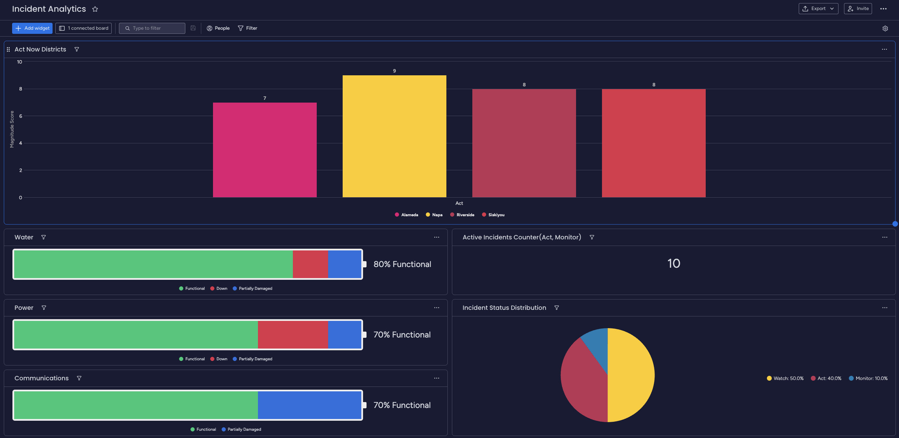

An autonomous data fusion pipeline leveraging Gemini 2.0 to triangulate, assess, and alert on wildfire threats in real-time.
View System DemoBelow is a real-time capture of the engine ingesting disparate signals and populating the Incident Command Board.
CAL FIRE, NWS RSS
Verified PIO Accounts
Thermal Anomalies
Direct Command Intel
Deduplication • Geocoding • Mag Scoring
Operational Dashboard & Alerts
Real-time view of the Monday.com operational dashboard, showing active incidents and status.

The frontend interface allows commanders to visualize the output of the intelligence engine on a geospatial plane.
Each board item encapsulates a single active incident, continuously updated by the fusion engine.
Automated routing based on the calculated Magnitude score ensures efficient resource allocation.
Slang & Metaphors
The Problem: AI can be "too smart" for its own good. If it sees a tweet saying "This new song is fire," it might log a wildfire.
The Fix: The Two-Source Rule. System isn't allowed to raise a major alarm unless it finds the same info in two different places (e.g., Social + Official).
Old News
The Problem: Old news keeps going viral. The AI might treat a 3-hour old video as a current event.
The Fix: Information "Use-By" Dates. News older than 20 minutes is marked "stale" and moved to history immediately.
Location Mix-ups
The Problem: Ambiguous place names (e.g., "Main St") can send teams to the wrong town 100 miles away.
The Fix: Digital Fencing. We lock the AI inside a "geographic box" (County Lines). If it can't prove a report is inside, it ignores it.
The "Blind Spot" Risk
The Problem: AI follows noise. Wealthy areas tweet more, potentially drowning out silent deadlines in rural areas.
The Fix: Official Feed Priority. The system prioritizes official sensors (Satellite/Towers) over social volume.
Contradictory Reports
The Problem: Conflicting onsite reports ("Bridge down" vs "Bridge open") can lead to vague "average" statuses.
The Fix: Timestamp Tie-Breaking. System trusts the most recent official source. If unsure, certainty score drops and deep summary will reflect the uncertainty.